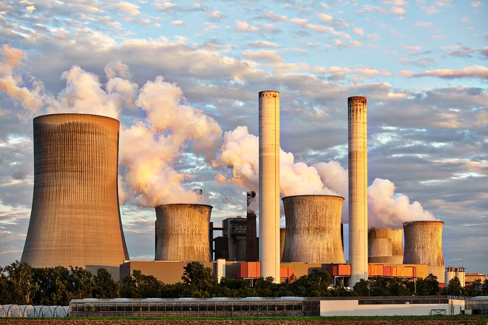

Preston Idaho

Weather Summary
Currently:
High: °F
Wind Chill: °F
Humidity: %
Wind Speed: mph
Five Day Forecast
: ° F
: ° F
: ° F
: ° F
: ° F
Events
March 29: Work Creek Revival
July 8-12: Napoleon Dynamite Festival
November 2-4: Freedom Days
Profits v planet: can big business and the environment get along?
by Yossi Sheffi
Warren Buffett said, “It takes 20 years to build a reputation and five minutes to ruin it.” It has been more than two decades now since a 1996 issue of Life magazine depicted a Pakistani boy sewing a Nike soccer ball, reportedly for six cents per hour. After the story, the company lost more than half its market capitalisation in just one year – it took Nike six years of demonstrated social responsibility to recuperate. Even today Nike is – fairly or unfairly – ranked low on lists of ethical companies. It has survived financially, but the reputation of the brand may never recover. Environmental reputations can be just as hard to rebuild. NGOs like Greenpeace and the World Wildlife Fund believe in the potential fragility of the environment, and they see the potential fragility of companies’ brands as a means of pressuring them to change. “When Greenpeace reaches for its toolbox, it tends to find only one tool, and that’s a mallet,” said Scott Poynton, founder of the Forest Trust “and it tends to beat people over the head with it.” If you want evidence the mallet approach works, consider KitKat. In 2010, Guinness World Records certified that KitKat was the world’s most global brand, sold in more countries than any other that year. But on 17 March that year, Greenpeace released a video parody of a KitKat commercial.
The clip opens with a bored office worker feeding papers into a shredder. Then, the screen turns red with the text “Have a break?” The worker opens a KitKat wrapper, but instead of fingers of chocolate, he finds the finger of an orangutan – complete with tufts of orange hair. Coworkers watch in horror as he crunches into the finger and blood dribbles on to his keyboard. The video urged viewers to “give the orangutan a break” and “stop Nestlé buying palm oil from companies that destroy rainforests”.
Greenpeace used the power of social media to attack fast, far, and wide. In a matter of weeks, 1.5 million people had watched the video.
The attack surprised Nestlé. For one thing, the company thought it had already been addressing the issue. Nestlé had adopted a “no deforestation” policy when directly sourcing palm oil, committing that its palm oil would “not come from areas cleared of natural forest after November 2005”. Nestlé neither produced palm oil nor owned any farms near orangutan habitats, nor had it ever ordered the clearing of rainforests to increase production of palm oil – but one of its suppliers had. Bosses attempted to address the issue by cancelling that supplier’s contracts, a response that initially failed. Although the effects of the campaign on KitKat sales are not publicly known, we can infer they were significant – it took just eight weeks for the company to agree to Greenpeace’s demands. Public shaming may drive change in some notable instances, but success stories such as this are few and far between. Campaigns from environmental NGOs such as Greenpeace are necessarily targeted, their effectiveness limited to the company or brand under fire. After a summer of heatwaves and forest fires you might think that any CEO worth their salt would have sustainability in mind, whether for righteous (environmental) or unrighteous (PR) reasons. The problem is that sustainability and public image are two of many factors that a company must balance to be successful. Each and every day CEOs across the world face numerous decisions, and sustainability is just one in a long list of priorities. Few will simply admit that they don’t care, although it is clear from interviews conducted with them that many will only go as far as the customers demand, or only make environmentally positive decisions if they also reduce costs. When it comes to sustainability in business it may even be necessary to take an entirely agnostic view on the science of climate change. To some extent it is irrelevant whether business executives personally embrace environmentalists’ arguments about “the challenge of our time”, or if they believe it is a hoax. The business merits of sustainability are based on the fact that even the most ardent climate-sceptic company executives face natural resource costs, public relations problems, regulatory burdens, and a green consumer segment. Regardless of what they may personally believe, they still have to balance whether and how to pursue environmental initiatives, weighing time and resources against many competing demands. Naturally, most of them focus on green initiatives that are aligned with their shareholders’ performance goals. The dual role of businesses’ supply chains in creating both economic growth (including jobs) and environmental impact highlights a fallacy in the Greenpeace story of “profits v planet”. The environmentalists’ narrative ignores the role of businesses and their supply chains in both employing people and delivering improved standards of living to humanity, especially to the billions of people who have yet to enjoy the plenty that modern industry can provide. After Walmart’s 2011 pledge to buy more sustainable seafood, Greenpeace contended that Walmart was not doing enough, whereas Alaskan fishermen and state officials complained that Walmart was asking too much of them. The real conflict is not “profits v planet” but rather “some people v other people”. Our challenge is to prove that sustainability benefits everybody, but especially those CEOs whose company profits drive such decision making.